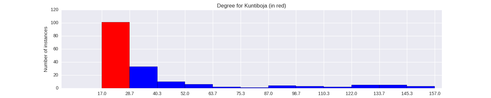

Quantiative Wayang Dictionary
Kuntiboja
Terms of address: Prabu
Type: Human
Origin: India
Notes on the Sanskrit version: King Kuntibhoja is known as the foster father of Kunti.
Alternative names: Basukunti
Description in the Javanese version: In the \Kempalan Balungan Lakon Wayang Purwa\ Kuntiboja is another name for Basukunti, the father of Basudewa and the adptive father of Kunti. But there are other versions where Kuntiboja is the father of Basukunti. The confusion is due to the fact that both father and son used the same name. They are descendants of Rama and Sita. According to the \Ensiklopedi Wayang Purwa\, Kuntiboja is the son of Wasukunteya and he was earlier known as as Kuntadewa. His uncle, Prabu Kunti had no sons, and Kuntadewa was then made king of Mandura with the title of Kuntiboja or Basukunti.
Found in the follwing lakon (stories):
Family relationships
Consorts: Bandondari
Offspring: Sruta, Basudewa, Bismaka, Ugrasena
More information
Ruler of: Boja (Mandura)
Sources: Ensiklopedi Wayang Purwa, p. 312; Sejarah Wayang Purwa, p. 133; Ensiklopedi Wayang Indonesia, pp. 390 (Vol. V) and 110-112 (Vol II)
Network measurements for Kuntiboja
| Measurement | Value | |
|---|---|---|
| Degree | 23.0 |  |
| Weighted Degree | 30.0 |  |
| Closeness Centrality | 0.535384615385 |  |
| Betweeness Centrality | 0.0 |  |
| Eigenvector Centrality | 0.168570004722 |  |
{kind=link}
Characters in the same adegan as Kuntiboja
| Character | Link weight |
|---|---|
| Character | Link weight |